Chapter 8: Analytics, Warehouses, Lakehouses & Data Engineering¶
Answering big questions about a business needs different engines from running its day-to-day transactions. This chapter explains why analytics uses columnar, parallel systems, then tours cloud data warehouses, data lakes and lakehouses, open table formats and catalogs, file formats, real-time OLAP and query engines. It covers how data gets there — ETL and ELT, dbt, orchestration and stream processing — how people consume it through BI tools and semantic layers, how to keep it trustworthy with quality, lineage and governance, and how data mesh and the 2026 data stack fit together.
8.1 OLAP: Why Analytics Needs Different Engines¶
Analytical questions — 'total sales by region per month for three years' — read millions or billions of rows but only a few columns. Engines built for this (OLAP engines) store data by column, compress it heavily and split each query across many CPU cores or machines. That makes them far faster for reports, but poor at many tiny updates.
Think of it like…
An OLTP database is a shop till handling one customer at a time; an OLAP engine is the accountant at year-end, adding up every receipt in the drawer as fast as possible.
Real-world example
Grocerly, a fictional supermarket chain, asks 'average basket value per store per week since 2022' — 900 million sales lines. On its PostgreSQL order database the query runs for 25 minutes and slows the checkout. Copied into a columnar warehouse, it reads just three of forty columns, compressed tenfold, across 64 cores, and returns in 4 seconds.
How it works¶
- Copy data from operational systems into an analytical store (warehouse or lakehouse).
- Store it column by column, sorted or partitioned (often by date), and compressed.
- At query time, skip partitions and blocks whose min/max values cannot match the filter.
- Read only the needed columns and process them in vectorised batches.
- Spread the scan across many cores or nodes (MPP) and merge partial aggregates.
- Optionally pre-aggregate common results with rollups or materialized views.
Who uses it
Data analysts, analytics engineers, data engineers and BI developers use OLAP engines daily; finance, retail, marketing and product teams consume the results.
Key takeaway
Interview answer for 'why not run analytics on the production database?': it competes with customer transactions, and row storage reads every column of every row.
Going deeper
- E. F. Codd coined 'OLAP' in a 1993 white paper listing 12 rules; the term stuck even though the paper, sponsored by a vendor, was controversial.
- Classic OLAP cubes pre-computed aggregates across dimensions (MOLAP, e.g. Microsoft SSAS, queried with MDX); ROLAP generated SQL against relational star schemas; modern cloud warehouses mostly compute on the fly.
- Column stores trace to research systems such as MonetDB and C-Store (2005), which became Vertica; today almost every analytical engine — Snowflake, BigQuery, Redshift, ClickHouse, DuckDB — is columnar and vectorised.
- Massively parallel processing (MPP), pioneered by Teradata in the 1980s, splits data across nodes that each scan their slice; a coordinator merges partial results.
- Approximate algorithms trade tiny errors for huge speed: HyperLogLog (Flajolet et al., 2007) counts distinct values in about 12 KB of memory with roughly 0.8% standard error in Redis's implementation.
- TPC-H (decision support) and TPC-DS (2012) are the standard analytical benchmarks; ClickBench, published by ClickHouse in 2022, is a popular open benchmark of real-world web analytics queries.
Common mistakes & misconceptions
- Running heavy reports directly on the production OLTP primary: it steals CPU and I/O from customers. Use a replica, warehouse or lakehouse.
- Using SELECT * on a columnar engine: you pay to read every column, which can cost real money on pay-per-scan services.
- Expecting OLAP engines to handle high-rate single-row updates: most prefer batch or append-only loads.
Try it: Feel columnar speed with DuckDB (pip install duckdb)¶
import duckdb
con = duckdb.connect()
con.sql("""CREATE TABLE sales AS
SELECT range AS id, range % 500 AS store, random()*100 AS amount,
DATE '2022-01-01' + (range % 1460)::INT AS day
FROM range(50_000_000)""")
con.sql("SELECT store, date_trunc('month', day) m, avg(amount) FROM sales GROUP BY ALL ORDER BY 1,2 LIMIT 5").show()
Key databases, concepts, languages, tools & standards¶
| Name | What it does | Example |
|---|---|---|
| Analytical (OLAP) engine Industry category · Concept · Current · Beginner · Analytical |
A database engine specialised for scan-heavy aggregate queries: columnar, compressed, vectorised and parallel. | Grocerly's 900-million-row basket query takes 25 minutes on its order database but 4 seconds on an OLAP engine. |
| Columnar storage (for analytics) C-Store/Vertica, MonetDB; all modern warehouses · Concept · Current · Beginner · Analytical |
Storing each column's values together so queries read only needed columns and compress them well. | A query on 3 of 120 columns reads under 3% of the table's bytes. |
| MPP (massively parallel processing) Teradata, Greenplum, Redshift · Concept · Current · Intermediate · Analytical |
Splitting data and query work across many nodes that scan their own slice in parallel. | A 16-node cluster scans 16 slices of a 10 TB table at once, finishing in seconds. |
| OLAP cube Microsoft SSAS, Oracle Essbase · Concept · Legacy · Intermediate · Analytical |
A pre-aggregated multidimensional structure with measures summarised along dimensions like time, product and region. | A finance cube answers 'Q3 margin by product line' instantly because totals are precomputed. |
| MOLAP, ROLAP & HOLAP OLAP architectures · Concept · Legacy · Intermediate · Analytical |
Multidimensional (stored cubes), relational (SQL on star schemas) and hybrid approaches to OLAP. | A bank's ROLAP tool generates SQL against star schemas instead of storing cubes. |
| MDX Microsoft, 1997 · Language · Legacy · Advanced · Analytical |
Multidimensional Expressions: query language for OLAP cubes using members, tuples and sets. | SELECT [Measures].[Sales] ON COLUMNS, [Date].[Year].MEMBERS ON ROWS FROM [Retail]. |
| Pre-aggregation & rollups Warehouses, Druid, ClickHouse · Pattern · Current · Intermediate · Analytical |
Storing summarised tables (per day, per store) so common dashboards read far fewer rows. | A daily_sales rollup of 2 million rows replaces scans of 3 billion raw sales lines. |
| Materialized views (analytics) Snowflake, BigQuery, Redshift, ClickHouse · Feature · Current · Intermediate · Analytical |
Stored query results the engine keeps up to date, often used automatically to rewrite matching queries. | BigQuery rewrites a dashboard query to use a materialized hourly aggregate, cutting cost 95%. |
| Data skipping & zone maps Min/max statistics in Parquet, Snowflake, Redshift · Feature · Current · Intermediate · Analytical |
Per-block min/max statistics let the engine skip blocks that cannot match a filter. | WHERE day = '2026-09-01' reads 3 of 5,000 micro-partitions because the rest have other dates. |
| Partition pruning Warehouses, lakehouse engines · Feature · Current · Beginner · Analytical |
Skipping whole partitions (such as months) that a query's filter rules out. | A September report on a month-partitioned table ignores the other 47 months. |
| HyperLogLog Flajolet et al., 2007 · Algorithm · Current · Advanced · Analytical |
Probabilistic algorithm estimating distinct counts with small fixed memory and about 1% error. | APPROX_COUNT_DISTINCT(user_id) returns daily active users in 1 second instead of 40. |
| Apache Kylin Apache Software Foundation (from eBay) · Tool · Legacy · Advanced · Analytical |
Open-source OLAP engine that pre-builds cubes on big-data storage for sub-second SQL queries. | A telecom precomputes call-detail cubes in Kylin for instant regional drill-downs. |
| ClickBench ClickHouse Inc., 2022 · Resource · Current · Intermediate · Analytical |
Open benchmark of 43 analytical queries on a real web-analytics dataset, with results for dozens of engines. | A student compares DuckDB, ClickHouse and PostgreSQL results on ClickBench before choosing a project engine. |
8.2 Cloud Data Warehouses: Snowflake, BigQuery, Redshift, Fabric & Databricks SQL¶
A data warehouse is a central database designed for analysis, holding cleaned, integrated history from many systems. Cloud warehouses separate storage from compute: data sits cheaply in cloud storage, and you rent processing power only when queries run. You pay by compute time, by data scanned, or by reserved capacity.
Think of it like…
A cloud warehouse is like a library with an unlimited stack room and as many reading rooms as you want to rent by the hour — closed reading rooms cost nothing, and the books stay put.
Real-world example
Grocerly loads sales, stock and loyalty data into Snowflake each night. Analysts use a Small warehouse during the day; finance gets its own Large warehouse at month-end so it never slows anyone else. Each warehouse auto-suspends after 60 seconds idle, so the monthly bill tracks actual use. A mistaken DELETE is undone with Time Travel.
How it works¶
- Load data from source systems using batch or streaming ingestion tools.
- Data is stored compressed and columnar in the provider's cloud object storage.
- Users submit SQL; the service plans it and assigns compute (warehouses, slots or nodes).
- Compute nodes scan pruned, cached data in parallel and return results.
- Compute scales up, out or to zero independently of storage.
- Governance features (roles, masking, audit) and sharing let others query the same data.
Who uses it
Data engineers, analytics engineers, analysts and BI developers; warehouse skills (Snowflake, BigQuery, Redshift, Fabric) appear in most data job postings.
Key takeaway
Know each pricing model: Snowflake bills credits per second of warehouse time, BigQuery on-demand bills per TiB scanned (or slot capacity), Redshift bills node-hours or Serverless RPU-hours.
Going deeper
- Snowflake (founded 2012) stores tables as immutable micro-partitions of 50-500 MB uncompressed; warehouse sizes double in credits per hour from X-Small (1) upwards, and Time Travel reaches up to 90 days on Enterprise edition.
- BigQuery grew out of Google's Dremel (VLDB 2010 paper); it is serverless and bills on-demand queries at $6.25 per TiB scanned with the first 1 TiB per month free, or by reserved slot capacity through editions.
- Amazon Redshift (announced 2012) was built on ParAccel technology; RA3 nodes separate compute from Redshift Managed Storage, and Redshift Serverless (GA 2022) bills in RPU-hours.
- Microsoft Fabric (GA November 2023) bundles a warehouse, lakehouse, data pipelines, real-time analytics and Power BI over OneLake, which stores tables as Delta Lake Parquet; Microsoft positions it as the successor to Azure Synapse Analytics.
- Databricks SQL runs serverless SQL warehouses over Delta Lake and Iceberg tables using Photon, a vectorised C++ engine described at SIGMOD 2022, blurring the line between warehouse and lakehouse.
- Zero-ETL features — such as Aurora-to-Redshift integrations and Fabric mirroring — replicate operational databases into warehouses continuously without users building pipelines.
Common mistakes & misconceptions
- Leaving warehouses running or auto-suspend disabled: an idle X-Large warehouse burns credits all weekend.
- Running SELECT * on BigQuery to 'preview' data: you pay for every column scanned, and LIMIT does not reduce bytes scanned — use the free table preview.
- Treating the warehouse as a transactional database for app traffic: high-rate single-row updates are slow and costly.
Try it: Snowflake basics (free trial account)¶
CREATE WAREHOUSE analyst_wh WAREHOUSE_SIZE = 'XSMALL'
AUTO_SUSPEND = 60 AUTO_RESUME = TRUE;
USE WAREHOUSE analyst_wh;
SELECT * FROM sales AT (OFFSET => -3600) LIMIT 10; -- Time Travel: one hour ago
CREATE TABLE sales_dev CLONE sales; -- zero-copy clone
UNDROP TABLE sales_old; -- recover a dropped table
Key databases, concepts, languages, tools & standards¶
| Name | What it does | Example |
|---|---|---|
| Snowflake Snowflake Inc. · Service · Current · Beginner · Analytical |
Cloud data platform with separate storage, compute (virtual warehouses) and services layers, on AWS, Azure and Google Cloud. | An insurer runs separate warehouses for claims analysts and data loading so they never contend. |
| Virtual warehouse Snowflake · Feature · Current · Intermediate · Analytical |
A named, resizable compute cluster that runs queries, auto-suspends when idle and resumes on demand. | A Medium warehouse costs 4 credits per hour and suspends after 60 idle seconds. |
| Time Travel & zero-copy cloning Snowflake (similar features in BigQuery, Databricks) · Feature · Current · Intermediate · Analytical |
Query or restore data as of a past time, and clone tables instantly without copying storage. | A developer clones the 5 TB production schema in seconds to test a new transformation. |
| Google BigQuery Google Cloud · Service · Current · Beginner · Analytical |
Serverless, columnar data warehouse that scales automatically; no clusters to size or manage. | A media company queries 30 TB of clickstream logs with standard SQL in under a minute. |
| BigQuery slots & pricing Google Cloud · Concept · Current · Intermediate · Analytical |
Slots are units of compute; pay per TiB scanned on demand or reserve slot capacity through editions. | A dry run shows a query will scan 2.1 TiB, so the analyst adds a partition filter first. |
| Amazon Redshift Amazon Web Services · Service · Current · Beginner · Analytical |
AWS's columnar MPP data warehouse, with provisioned RA3 clusters or Redshift Serverless. | A retailer queries S3 data lake files from Redshift with Spectrum alongside local tables. |
| Redshift Serverless Amazon Web Services (GA 2022) · Service · Current · Intermediate · Analytical |
Redshift without cluster management; capacity is measured in RPUs and billed only while queries run. | A start-up's nightly reports cost a few dollars because compute runs only 20 minutes a day. |
| Microsoft Fabric Microsoft (GA November 2023) · Service · Current · Beginner · Analytical |
Unified SaaS analytics platform combining data engineering, warehouse, real-time analytics and Power BI on OneLake. | A council moves from separate Synapse and Power BI services to one Fabric F64 capacity. |
| OneLake Microsoft Fabric · Feature · Current · Intermediate · Analytical |
Fabric's single tenant-wide data lake storing tables in Delta Lake format, with shortcuts to external storage. | A shortcut exposes S3 files in OneLake without copying them. |
| Azure Synapse Analytics Microsoft · Service · Legacy · Intermediate · Analytical |
Azure analytics service with dedicated and serverless SQL pools and Spark; Microsoft now steers new work to Fabric. | A bank keeps its Synapse dedicated pool running while planning a migration to Fabric Warehouse. |
| Databricks SQL Databricks · Service · Current · Intermediate · Analytical |
Serverless SQL warehouses on the Databricks lakehouse, using the Photon engine over open table formats. | Analysts point Tableau at a Databricks SQL warehouse that reads the same Delta tables as data scientists. |
| Teradata Vantage Teradata · Service · Current · Intermediate · Analytical |
Long-established MPP analytics platform, now offered as VantageCloud across major clouds. | A large airline still runs revenue analytics on Teradata built up over two decades. |
| Oracle Autonomous Data Warehouse Oracle · Service · Current · Intermediate · Analytical |
Self-tuning, self-patching cloud warehouse built on Oracle Database and Exadata infrastructure. | An Oracle-centric manufacturer loads ERP data into Autonomous Data Warehouse for reporting. |
| Zero-ETL integration AWS, Microsoft Fabric mirroring, Google Datastream · Feature · Current · Intermediate · Analytical |
Managed, continuous replication from operational databases into analytics stores without hand-built pipelines. | Aurora MySQL orders appear in Redshift within seconds through a zero-ETL integration. |
8.3 Data Lakes, Lakehouses & the Medallion Architecture¶
A data lake stores raw files of any kind — CSV, JSON, Parquet, images — cheaply in object storage such as Amazon S3. On its own a lake lacks transactions and tidy tables, so it can become a 'data swamp'. A lakehouse adds open table formats and catalogs on top, giving warehouse features (ACID, schemas, fast SQL) on open files that many engines can read.
Think of it like…
A data lake is a giant storage unit where you throw everything; a lakehouse is the same unit with shelves, labels and a checkout log so anyone can find and borrow things safely.
Real-world example
Voltaic, a fictional e-scooter company, lands raw trip JSON from 40,000 scooters in S3 (bronze). A Spark job cleans and deduplicates it into Iceberg tables (silver). Daily aggregates per city become gold tables. Data scientists read silver with Python, analysts query gold with Trino, and finance reads the same gold tables from Snowflake — one copy of data, many engines.
How it works¶
- Ingest raw data as files into object storage, unchanged (bronze layer).
- Clean, deduplicate, type and conform it into tables in an open table format (silver layer).
- Build business-level aggregates and dimensional models (gold layer).
- Register tables in a catalog so engines can discover them and enforce permissions.
- Query with any compatible engine: Spark, Trino, DuckDB, Snowflake, BigQuery, Databricks.
- Maintain tables: compact small files, expire old snapshots, cluster data.
Who uses it
Data engineers and platform teams build lakehouses; data scientists, ML engineers and analysts use them; common at companies with large, varied or semi-structured data.
Key takeaway
One-sentence definition for interviews: a lakehouse = cheap open files in object storage + an open table format for ACID + a catalog + any engine.
Going deeper
- James Dixon of Pentaho coined 'data lake' in 2010; the first lakes ran on Hadoop's HDFS with Hive tables, but most moved to cloud object storage (S3, ADLS Gen2, Google Cloud Storage) for cost and elasticity.
- Amazon S3 became strongly consistent for reads after writes in December 2020, and added conditional writes in 2024, which table formats can use to commit metadata safely without an external lock service.
- The 2021 CIDR paper 'Lakehouse' by Armbrust, Ghodsi, Xin and Zaharia of Databricks argued that open formats plus metadata layers could match warehouse performance while supporting ML on the same data.
- Small files hurt: thousands of 1 MB files cost far more metadata and request overhead than a few files of 128 MB-1 GB, so compaction jobs (OPTIMIZE, rewrite_data_files) are routine maintenance.
- Amazon S3 Tables (launched December 2024) store Iceberg tables in 'table buckets' with automatic compaction and snapshot management, moving table-format maintenance into the storage service itself.
- Delta Sharing (2021) is an open protocol for sharing live tables across organisations and platforms without copying data, similar in goal to Snowflake's secure data sharing.
Common mistakes & misconceptions
- Dumping data in a lake with no catalog, owners or documentation: it becomes a swamp nobody trusts.
- Writing many tiny files from streaming jobs and never compacting them: queries slow down and request costs climb.
- Assuming 'open format' means 'no lock-in': catalogs, governance and proprietary features can still tie you to one vendor.
Try it: Query raw lake files directly with DuckDB¶
-- duckdb CLI
COPY (SELECT range AS trip_id, 'Paris' AS city, random()*5 AS km FROM range(100000))
TO 'bronze/trips' (FORMAT parquet, PARTITION_BY (city));
SELECT city, round(avg(km), 2) AS avg_km
FROM read_parquet('bronze/trips/*/*.parquet', hive_partitioning = true)
GROUP BY city;
Key databases, concepts, languages, tools & standards¶
| Name | What it does | Example |
|---|---|---|
| Cloud object storage Amazon S3, Azure Data Lake Storage Gen2, Google Cloud Storage · Service · Current · Beginner · General |
Durable, cheap, virtually unlimited storage for files (objects), accessed over HTTP APIs. | Storing 500 TB of Parquet in S3 Standard costs a fraction of the same capacity on database disks. |
| Data swamp Industry term · Concept · Current · Beginner · Analytical |
A data lake that has become unusable because data lacks quality, ownership, documentation or discoverability. | Analysts find 14 different 'customers' folders and trust none of them. |
| Hadoop & HDFS Apache Software Foundation (Doug Cutting, 2006) · Tool · Legacy · Intermediate · Analytical |
Open-source framework for distributed storage (HDFS) and batch processing (MapReduce) on commodity clusters. | A bank is migrating its on-premises 200-node Hadoop cluster to a cloud lakehouse. |
| Apache Hive Apache Software Foundation (from Facebook) · Tool · Legacy · Intermediate · Analytical |
SQL-on-Hadoop system whose table layout and Metastore still shape lake conventions today. | Folders like sales/year=2026/month=10/ follow Hive-style partitioning. |
| Medallion architecture Databricks (bronze/silver/gold) · Pattern · Current · Beginner · Analytical |
Organising lakehouse data into raw (bronze), cleaned (silver) and business-ready (gold) layers. | Raw payment events land in bronze; gold holds daily revenue per merchant. |
| Databricks Data Intelligence Platform Databricks · Service · Current · Intermediate · Analytical |
Lakehouse platform built around Apache Spark, Delta Lake and Unity Catalog, with SQL, ML and AI tools. | A pharma company runs ETL notebooks, SQL dashboards and model training in one Databricks workspace. |
| Schema-on-read Data lake practice · Concept · Current · Intermediate · Analytical |
Applying structure when data is read rather than when it is written. | Raw JSON events are stored as-is; a query extracts fields and casts types at read time. |
| Hive-style partitioning Apache Hive convention · Pattern · Current · Intermediate · Analytical |
Organising files into key=value folders so engines can skip irrelevant folders. | A query for city=Paris reads only the bronze/trips/city=Paris/ folder. |
| Small files problem & compaction Lakehouse maintenance · Concept · Current · Intermediate · Analytical |
Too many tiny files slow queries; compaction rewrites them into fewer large files. | A nightly job merges 80,000 streaming files into 300 files of about 256 MB. |
| Amazon S3 Tables Amazon Web Services (December 2024) · Service · Current · Intermediate · Analytical |
S3 'table buckets' that store Apache Iceberg tables with built-in compaction and snapshot cleanup. | A team creates a table bucket and queries it from Athena without running compaction jobs. |
| Delta Sharing Databricks / Linux Foundation (2021) · Protocol · Current · Intermediate · Analytical |
Open protocol for securely sharing live tables with other organisations and tools without copying. | A data vendor shares a daily-updated Delta table that a client reads from pandas. |
| Lakehouse table maintenance Iceberg, Delta Lake, Hudi · Concept · Current · Advanced · Analytical |
Routine jobs to compact files, expire old snapshots, remove orphan files and re-cluster data. | Expiring snapshots older than 7 days frees 30 TB of storage held for time travel. |
8.4 Open Table Formats: Iceberg, Delta Lake, Hudi, Paimon & DuckLake¶
An open table format is a set of metadata files that turns a folder of Parquet files into a proper table with transactions, schema changes, time travel and safe concurrent writes. Apache Iceberg, Delta Lake and Apache Hudi are the big three; Apache Paimon and DuckLake are newer. Because the formats are open, many engines can read and write the same tables.
Think of it like…
Parquet files are the pages of a book; the table format is the table of contents plus a revision history, so readers always see a complete edition and can open older editions.
Real-world example
Voltaic's silver 'trips' table is Iceberg. A Spark job commits 2,000 new files as one snapshot; a Trino query running at the same time keeps reading the previous snapshot, so it never sees half the files. When a bug corrupts yesterday's load, an engineer rolls the table back to the snapshot before it in one command.
How it works¶
- Data is written as immutable Parquet (or ORC/Avro) files.
- The writer records which files make up the new table version in metadata (manifests or a log).
- It commits by atomically swapping the catalog pointer or adding the next log entry.
- Readers load the current metadata, prune files using stored statistics and read only what they need.
- Updates and deletes write new files or delete markers (copy-on-write or merge-on-read).
- Old snapshots remain for time travel until maintenance expires them.
Who uses it
Data and platform engineers designing lakehouses; increasingly every warehouse user, as Snowflake, BigQuery, Redshift, Databricks and Fabric all read open table formats.
Key takeaway
Remember Iceberg's metadata tree: catalog pointer → metadata.json → manifest list (per snapshot) → manifest files → data files.
Going deeper
- Iceberg began at Netflix in 2017 and became an Apache top-level project in 2020; v2 added row-level deletes, and v3, finalised with Iceberg 1.10 in 2025, adds deletion vectors, a variant type, row lineage and default column values.
- Delta Lake, open-sourced by Databricks in 2019 and hosted by the Linux Foundation, records commits as JSON files in _delta_log with periodic Parquet checkpoints; Delta 4.0 (September 2025) added variant and type widening, with catalog-managed tables in preview.
- Apache Hudi, created at Uber in 2016, focuses on upserts and incremental processing with copy-on-write and merge-on-read tables; Hudi 1.0 arrived around the end of 2024 with secondary indexes and a new timeline design.
- Apache Paimon (from Flink Table Store, top-level since 2024) uses an LSM-tree layout for high-rate streaming upserts; Apache XTable and Delta UniForm translate metadata so one copy of data appears in several formats.
- DuckLake, announced by DuckDB's creators in 2025 and released as 1.0 in April 2026, keeps all table metadata in an ordinary SQL database (DuckDB, PostgreSQL, SQLite or MySQL) instead of files in object storage.
- In June 2024 Databricks acquired Tabular, the company founded by Iceberg's creators, and pledged to converge Delta Lake and Iceberg; most major warehouses now read and write Iceberg.
Common mistakes & misconceptions
- Picking a format by hype rather than engine support: check that every engine you need can both read and write your format and version (for example Iceberg v3).
- Never running snapshot expiry: time-travel history keeps deleted files forever and storage bills grow silently.
- Bypassing the catalog and writing files directly into a table's folder — the table format will not see them, or worse, readers see partial data.
Try it: A tiny lakehouse on your laptop with DuckLake (DuckDB 1.5+)¶
INSTALL ducklake; LOAD ducklake;
ATTACH 'ducklake:lake.ducklake' AS lake (DATA_PATH 'lake_files/');
CREATE TABLE lake.trips AS SELECT range AS id, random()*5 AS km FROM range(1000);
DELETE FROM lake.trips WHERE km > 4;
FROM ducklake_snapshots('lake'); -- each commit is a snapshot
SELECT count(*) FROM lake.trips AT (VERSION => 1); -- time travel
Key databases, concepts, languages, tools & standards¶
| Name | What it does | Example |
|---|---|---|
| Open table format Iceberg, Delta Lake, Hudi, Paimon · Concept · Current · Beginner · Analytical |
Metadata specification that adds ACID transactions, schema evolution and snapshots to files in object storage. | Three engines safely read one table because they all follow the same Iceberg metadata rules. |
| Apache Iceberg Apache Software Foundation (from Netflix) · Format · Current · Beginner · Analytical |
Widely adopted open table format with snapshot isolation, hidden partitioning and schema evolution. | Snowflake, BigQuery, Athena, Spark and Trino all query the same Iceberg orders table. |
| Iceberg v3 Apache Iceberg (spec finalised 2025) · Standard · Emerging · Advanced · Analytical |
Third format version adding deletion vectors, variant type, row lineage, default values and geospatial types. | Upgrading to v3 lets a CDC table mark deleted rows in compact bitmaps instead of many delete files. |
| Hidden partitioning Apache Iceberg · Feature · Current · Intermediate · Analytical |
Partitions are derived from column transforms like days(ts), so queries need no special partition columns. | WHERE ts > '2026-10-01' automatically prunes day partitions without a separate date column. |
| Partition & schema evolution Apache Iceberg, Delta Lake · Feature · Current · Intermediate · Analytical |
Changing partitioning or columns without rewriting existing data files. | A table partitioned by month switches to daily partitions; old files keep the monthly layout. |
| Delta Lake Linux Foundation (created by Databricks) · Format · Current · Beginner · Analytical |
Open table format using a transaction log of JSON commits and Parquet checkpoints; default on Databricks and Fabric. | A MERGE INTO on a Delta table upserts 2 million changed customer rows atomically. |
| Delta transaction log Delta Lake (_delta_log) · Data structure · Current · Advanced · Analytical |
Ordered commit files describing added and removed data files; replaying them gives the current table state. | Commit 00000000000000000042.json records three new files and two removed ones. |
| Deletion vectors Delta Lake, Iceberg v3, DuckLake · Feature · Current · Advanced · Analytical |
Compact bitmaps marking deleted rows in a file, avoiding rewriting the whole file for a few deletes. | Deleting 50 rows from a 1 GB file writes a tiny bitmap instead of a new 1 GB file. |
| Apache Hudi Apache Software Foundation (from Uber) · Format · Current · Intermediate · Analytical |
Table format optimised for upserts, deletes and incremental pulls on the lake, with built-in indexing. | A ride-hailing firm upserts trip status changes into Hudi every few minutes. |
| Copy-on-write vs merge-on-read Hudi, Iceberg, Delta Lake · Concept · Current · Advanced · Analytical |
COW rewrites files on update (fast reads); MOR writes change records merged at read time (fast writes). | A frequently updated table uses MOR, then compacts nightly so morning queries stay fast. |
| Apache Paimon Apache Software Foundation (from Flink Table Store) · Format · Current · Advanced · Analytical |
Streaming-first lake format using LSM trees for high-rate upserts, closely integrated with Flink. | A Flink job upserts inventory changes into Paimon every 30 seconds for near-real-time reports. |
| Apache XTable Apache Software Foundation (began as Onehouse's OneTable) · Tool · Emerging · Advanced · Analytical |
Translates table metadata between Hudi, Delta Lake and Iceberg so one copy of data is readable as each. | XTable exposes a Hudi table as Iceberg metadata for an Iceberg-only query engine. |
| Delta UniForm Delta Lake / Databricks · Feature · Current · Advanced · Analytical |
Writes Iceberg-compatible metadata alongside Delta's log so Iceberg readers can query Delta tables. | Snowflake reads a Databricks-managed Delta table through its UniForm Iceberg metadata. |
| Snapshots & time travel All open table formats · Feature · Current · Intermediate · Analytical |
Each commit creates a table version you can query or roll back to until it is expired. | SELECT * FROM orders FOR VERSION AS OF 8812 reproduces last Tuesday's report exactly. |
8.5 Lakehouse Catalogs: Iceberg REST, Polaris, Unity Catalog & Glue¶
A catalog is the directory of a lakehouse: it knows which tables exist, where their current metadata lives and who may access them. Every engine asks the catalog before reading or writing, and the catalog's atomic pointer swap is what makes commits safe. The Iceberg REST catalog specification lets any engine talk to any compatible catalog.
Think of it like…
The catalog is a library's front desk: it tells you which shelf holds the latest edition, checks your library card, and records when a new edition replaces the old one.
Real-world example
Voltaic runs Apache Polaris as its Iceberg REST catalog. Spark writes the silver tables, Trino and DuckDB read them, and Snowflake queries gold tables — all through the same catalog. When an analyst queries trips, Polaris checks her role and vends short-lived storage credentials for just that table's files, so nobody needs broad S3 keys.
How it works¶
- An engine asks the catalog to load a table by name (namespace.table).
- The catalog checks permissions and returns the location of the current metadata file.
- Optionally it vends temporary, table-scoped credentials for the object storage.
- The engine reads metadata and data files directly from storage.
- To commit, the engine sends the new metadata location with the version it started from.
- The catalog swaps the pointer atomically only if nobody else committed first; otherwise the writer retries.
Who uses it
Data platform engineers, data governance teams and security engineers; catalog choice is now one of the most strategic lakehouse decisions.
Key takeaway
Separate the two meanings: a technical catalog (Polaris, Glue, Unity) manages tables and commits; a business catalog (DataHub, Collibra, Atlan) documents meaning, ownership and lineage.
Going deeper
- The Iceberg REST catalog is an OpenAPI specification; because it standardises load, create and commit calls, catalogs such as Polaris, Unity Catalog, AWS Glue, Snowflake Open Catalog and others can serve the same engines.
- Apache Polaris was created by Snowflake and Dremio, donated to the Apache Software Foundation in August 2024, and graduated to a top-level project in February 2026; Snowflake offers a managed version as Snowflake Open Catalog.
- Unity Catalog began as Databricks' governance layer and was open-sourced in June 2024 under the LF AI & Data Foundation; it governs tables, volumes, functions and ML models and exposes an Iceberg REST interface.
- The Hive Metastore, a Thrift service backed by a relational database, was the original lake catalog; AWS Glue Data Catalog is Hive-compatible and now also offers an Iceberg REST endpoint, with Lake Formation adding row- and column-level permissions.
- Project Nessie adds Git-like branches, tags and multi-table commits to Iceberg; Apache Gravitino, which graduated in 2025, federates metadata across many catalogs and sources.
- Credential vending — handing engines short-lived, table-scoped storage credentials — lets the catalog enforce access even though engines read files directly from object storage.
Common mistakes & misconceptions
- Letting each engine keep its own catalog: tables drift out of sync and permissions diverge. Standardise on one shared catalog.
- Granting engines bucket-wide storage keys: anyone can bypass catalog permissions by reading files directly. Use credential vending.
- Confusing a technical catalog with a business glossary — you usually need both, connected by lineage.
Try it: Talk to an Iceberg REST catalog from Python (pip install 'pyiceberg[pyarrow]')¶
from pyiceberg.catalog import load_catalog
cat = load_catalog('lake', **{
'type': 'rest',
'uri': 'http://localhost:8181/api/catalog', # e.g. a local Polaris
'warehouse': 'demo'})
print(cat.list_namespaces())
tbl = cat.load_table('silver.trips')
print(tbl.schema(), tbl.current_snapshot())
print(tbl.scan(row_filter='km > 3').to_arrow().num_rows)
Key databases, concepts, languages, tools & standards¶
| Name | What it does | Example |
|---|---|---|
| Technical (metastore) catalog Lakehouse architecture · Concept · Current · Beginner · Analytical |
Service tracking tables, schemas and current metadata locations, and coordinating atomic commits. | Every Spark job looks up 'gold.daily_revenue' in the catalog before reading files. |
| Hive Metastore Apache Hive · Tool · Legacy · Intermediate · Analytical |
Original Hadoop-era catalog storing table definitions and partitions in a relational database. | An on-premises cluster still lists 40,000 partitions in a MySQL-backed Hive Metastore. |
| Iceberg REST catalog specification Apache Iceberg · Standard · Current · Intermediate · Analytical |
OpenAPI spec defining how engines list, load, create and commit Iceberg tables via HTTP. | Swapping catalogs requires only changing the REST URI in Spark and Trino configuration. |
| Apache Polaris Apache Software Foundation (top-level since February 2026) · Tool · Current · Intermediate · Analytical |
Open-source Iceberg REST catalog with role-based access control and credential vending. | A start-up runs Polaris on Kubernetes so Spark, Trino and Snowflake share one set of tables. |
| Snowflake Open Catalog & Horizon Snowflake · Service · Current · Intermediate · Analytical |
Managed Polaris service (Open Catalog) and Snowflake's built-in governance catalog (Horizon) for Iceberg tables. | Snowflake-managed Iceberg tables are exposed to external Spark jobs through the catalog's REST API. |
| Unity Catalog Databricks; open source under LF AI & Data · Tool · Current · Intermediate · Analytical |
Unified governance catalog for tables, files, functions and ML models, with lineage and fine-grained access. | A bank masks card numbers for analysts with a Unity Catalog column mask applied in every workspace. |
| AWS Glue Data Catalog Amazon Web Services · Service · Current · Beginner · Analytical |
Managed, Hive-compatible catalog used by Athena, EMR, Redshift Spectrum and Glue, with Iceberg support. | A Glue crawler registers new S3 folders as tables that Athena queries minutes later. |
| AWS Lake Formation Amazon Web Services · Service · Current · Intermediate · Analytical |
Permissions layer over the Glue catalog with database, table, column, row and cell-level access control. | Regional managers see only rows for their own region when querying sales in Athena. |
| Project Nessie Project Nessie (open source) · Tool · Current · Advanced · Analytical |
Transactional catalog with Git-like branches and tags across many Iceberg tables. | Engineers test a new pipeline on a 'dev' branch, then merge all table changes atomically. |
| Apache Gravitino Apache Software Foundation · Tool · Emerging · Advanced · Analytical |
Federated metadata lake that unifies catalogs across lakehouses, databases, streams and ML assets. | A conglomerate exposes Hive, Iceberg and Kafka metadata from five regions through one Gravitino endpoint. |
| Google BigLake & metastore Google Cloud · Service · Current · Intermediate · Analytical |
Google's lakehouse layer letting BigQuery and open engines share governed Iceberg tables on Cloud Storage. | BigQuery and Dataproc Spark query the same BigLake Iceberg table with one set of permissions. |
| Credential vending Iceberg REST catalogs (Polaris, Unity, Glue, S3 Tables) · Feature · Current · Advanced · Analytical |
The catalog issues short-lived storage credentials limited to one table's files after an access check. | Trino receives a 15-minute token for s3://lake/silver/trips/ only, not the whole bucket. |
| Optimistic commit & retry Open table formats · Concept · Current · Advanced · Analytical |
Writers prepare changes independently; the catalog accepts a commit only if the base version is unchanged. | Two jobs commit to one table; the loser re-reads metadata, rechecks conflicts and retries. |
8.6 File Formats: Parquet, ORC, Avro, Arrow & Why Columnar Wins¶
Analytical data is stored in files, and the file format matters enormously. Row formats (CSV, JSON, Avro) keep each record together — good for writing and streaming. Columnar formats (Parquet, ORC) keep each column together with statistics and compression — good for analytics. Apache Arrow is the columnar format for data in memory, so tools can share it without converting.
Think of it like…
A row file is a stack of filled-in forms; a columnar file is the same forms cut into strips, one strip per question, so you can read every answer to 'age' without touching names or addresses.
Real-world example
A fictional city transport office exports 2 billion ticket taps as CSV: 310 GB, and a query for average fare per station takes 9 minutes in DuckDB. Converted to Parquet with Zstandard compression it is about 28 GB, and the same query reads only two columns and finishes in seconds. Their Kafka stream keeps using Avro, which suits one-record-at-a-time messages.
How it works¶
- Pick a row format for streaming or record exchange (Avro, Protobuf, JSON Lines).
- Pick a columnar format for analytical storage (Parquet almost everywhere, ORC in Hive ecosystems).
- Writers group rows into row groups, then store each column's values in a column chunk.
- Each chunk is encoded (dictionary, run-length, delta) and compressed (Snappy, Zstd, LZ4).
- The footer stores the schema plus min/max statistics so readers can skip data.
- Readers load data into Arrow memory for fast, zero-copy processing across tools.
Who uses it
Data engineers choose and tune formats; data scientists meet Parquet and Arrow through pandas, Polars and Spark; streaming engineers use Avro and Protobuf.
Key takeaway
Short answer to 'why Parquet?': read only needed columns, compress similar values well, and skip row groups using footer statistics.
Going deeper
- Parquet was created by Twitter and Cloudera in 2013, borrowing Google Dremel's repetition and definition levels to store nested data in columns; it became an Apache top-level project in 2015.
- Parquet encodings include dictionary (RLE_DICTIONARY), run-length/bit-packing, DELTA_BINARY_PACKED for sorted integers and BYTE_STREAM_SPLIT for floats; page indexes and bloom filters further improve skipping.
- ORC, built by Hortonworks with Facebook for Hive in 2013, organises data into stripes with lightweight indexes every 10,000 rows and underpins Hive's ACID tables.
- Avro (Doug Cutting, 2009) is row-oriented with JSON-defined schemas; readers resolve differences between writer and reader schemas, which makes it the classic choice with Kafka schema registries.
- Apache Arrow (2016) standardises columnar memory so pandas, Polars, DuckDB, Spark and others exchange data without serialisation; Arrow Flight, Flight SQL and ADBC move Arrow data over networks and database APIs.
- Newer formats target AI and random access: Lance (from LanceDB) for multimodal and vector data, and Vortex (started by SpiralDB) with cascading compression and fast random reads.
Common mistakes & misconceptions
- Storing analytical history as CSV or JSON: files are several times larger, untyped and must be fully parsed for every query.
- Writing Parquet with tiny row groups or thousands of tiny files: statistics and compression lose effectiveness.
- Assuming CSV is a precise standard — quoting, encodings and delimiters vary despite RFC 4180, so always specify options when loading.
Try it: Write Parquet and inspect its row groups and statistics with DuckDB¶
COPY (SELECT range AS id, range % 300 AS station, random()*4 AS fare
FROM range(5_000_000))
TO 'taps.parquet' (FORMAT parquet, COMPRESSION zstd, ROW_GROUP_SIZE 1_000_000);
SELECT row_group_id, path_in_schema, compression, stats_min, stats_max
FROM parquet_metadata('taps.parquet') LIMIT 6;
SELECT * FROM parquet_schema('taps.parquet');
Key databases, concepts, languages, tools & standards¶
| Name | What it does | Example |
|---|---|---|
| CSV (as an analytics format) RFC 4180 (2005) · Format · Current · Beginner · General |
Untyped text rows: fine for exchange, but large, slow to parse and unable to skip columns in analytical queries. | A 310 GB daily CSV export shrinks to about 28 GB once converted to Parquet. |
| JSON & JSON Lines RFC 8259; JSON Lines convention · Format · Current · Beginner · Document |
Text formats for nested records; JSON Lines puts one JSON object per line for streaming and appending. | API events are stored as JSON Lines in bronze, one event per line. |
| Apache Parquet Apache Software Foundation (Twitter & Cloudera, 2013) · Format · Current · Beginner · Analytical |
Open columnar file format with nested types, rich encodings, compression and statistics; the lakehouse default. | Iceberg and Delta tables store their data as Parquet files in object storage. |
| Row groups & column chunks Apache Parquet · Data structure · Current · Intermediate · Analytical |
Parquet slices rows into groups, and stores each column of each group contiguously with its own statistics. | A filter fare > 3 skips row groups whose max fare is below 3. |
| Columnar encodings Parquet, ORC, Arrow · Algorithm · Current · Intermediate · Analytical |
Dictionary, run-length and delta encodings that shrink repetitive or sorted column values before compression. | A 'country' column with 200 distinct values becomes small dictionary IDs packed into a few bits. |
| Compression codecs Snappy (Google), Zstandard (Meta), LZ4, gzip · Algorithm · Current · Intermediate · General |
Algorithms trading compression ratio for speed; Zstd offers high ratios, Snappy and LZ4 favour speed. | Switching Parquet from Snappy to Zstd shrinks a 10 TB lake by about a quarter. |
| Apache ORC Apache Software Foundation (Hortonworks & Facebook, 2013) · Format · Current · Intermediate · Analytical |
Optimized Row Columnar format with stripes, indexes and ACID support, common in Hive ecosystems. | A Hive data warehouse stores transactional tables as ORC to support updates. |
| Apache Avro Apache Software Foundation (Doug Cutting, 2009) · Format · Current · Intermediate · General |
Compact binary row format with JSON-defined schemas and well-defined schema evolution rules. | Kafka producers serialise orders as Avro and register each schema version in a registry. |
| Protocol Buffers Google (open-sourced 2008) · Format · Current · Intermediate · General |
Compact, typed binary serialisation defined in .proto files; common for gRPC and event streams. | A telemetry service sends Protobuf messages to Kafka at 200,000 events per second. |
| Arrow Flight SQL & ADBC Apache Arrow project · Protocol · Current · Advanced · Analytical |
Network protocol and database API that move query results as Arrow batches instead of row-by-row. | An ADBC driver loads 50 million rows from a warehouse into a DataFrame many times faster than ODBC. |
| Predicate pushdown Parquet/ORC readers, query engines · Concept · Current · Intermediate · Analytical |
Applying filters inside the file reader, using statistics to skip data before it is decoded. | WHERE station = 17 is pushed into the Parquet reader, which skips 90% of row groups. |
| Lance LanceDB (open source) · Format · Emerging · Advanced · Vector |
Columnar format designed for AI data — images, embeddings and fast random access — with versioning. | A computer-vision team stores images, labels and embeddings together in Lance tables. |
| Vortex Started by SpiralDB (open source) · Format · Emerging · Advanced · Analytical |
Emerging columnar file format with cascading compression, aimed at fast scans and random access. | An engine team benchmarks Vortex against Parquet for point lookups on wide tables. |
8.7 Real-Time OLAP: ClickHouse, Druid, Pinot, StarRocks & Doris¶
Real-time OLAP databases answer analytical queries in milliseconds on data that arrived seconds ago, often for thousands of users at once. They ingest streams from Kafka, store data in compressed columns with clever indexes, and power live dashboards, observability tools and analytics shown inside products to customers.
Three popular real-time OLAP engines
| ClickHouse | Apache Druid | Apache Pinot | |
|---|---|---|---|
| Origin | Yandex (open source 2016) | Metamarkets (2011) | LinkedIn (2015) |
| Storage unit | MergeTree parts | Time-chunked segments | Segments + star-tree |
| Streaming ingest | Kafka engine, ClickPipes | Native Kafka/Kinesis | Native Kafka, upserts |
| Joins | Good and improving | Limited | Limited (multi-stage engine) |
| Commercial | ClickHouse Inc. | Imply | StarTree |
All are columnar and fast; they differ in origins, ingestion and join strength.
Think of it like…
A warehouse is a monthly printed atlas; real-time OLAP is the live traffic map in your car — always current and fast enough for everyone to check at once.
Real-world example
Beatbox, a fictional music-streaming service, shows every artist a live dashboard of plays by country. 300,000 play events per second flow from Kafka into ClickHouse. Each artist's dashboard query filters by artist_id, hits the sorted primary key, and returns in 40 ms — even with 5,000 artists refreshing at once.
How it works¶
- Events stream in from Kafka, Kinesis or batch files.
- Data is written into columnar segments or parts, sorted by key columns such as time and tenant.
- Background processes merge small parts or build indexes and rollups.
- Queries hit sparse or inverted indexes to read only the relevant blocks.
- Vectorised execution aggregates the data on many cores and returns results in milliseconds.
- Replicas spread the query load for high concurrency.
Who uses it
Data and platform engineers building user-facing analytics, observability, ad-tech, gaming and fintech dashboards.
Key takeaway
Choose by need: ClickHouse for general fast SQL analytics; Druid and Pinot for very high-concurrency, time-based slicing with streaming ingest; StarRocks and Doris for MPP joins and lakehouse queries.
Going deeper
- ClickHouse's MergeTree engine sorts each data part by the ORDER BY key and keeps a sparse primary index with one entry per granule of 8,192 rows by default, so lookups read only a few granules.
- ClickHouse variants such as ReplacingMergeTree, SummingMergeTree and AggregatingMergeTree apply deduplication or aggregation during background merges; incremental materialized views transform data at insert time.
- Apache Druid stores immutable, time-partitioned segments in deep storage (such as S3) and loads them onto historical nodes, while real-time tasks serve just-ingested data; it became an Apache top-level project in 2019.
- Apache Pinot powers LinkedIn features such as 'Who viewed your profile'; its star-tree index pre-aggregates chosen dimension combinations, and it supports real-time upserts.
- StarRocks began in 2020 as a fork of Apache Doris and moved to the Linux Foundation in 2023; both are MySQL-protocol-compatible MPP engines with strong joins and the ability to query Iceberg, Hudi and Delta tables.
- Rockset, a real-time analytics database, was acquired by OpenAI in 2024 and shut down for external customers — a reminder to weigh vendor risk for proprietary services.
Common mistakes & misconceptions
- Inserting one row at a time into ClickHouse: each insert creates a part. Batch inserts (thousands of rows) or use async inserts.
- Choosing a sort/primary key that doesn't match the common filters: queries scan everything despite the 'index'.
- Expecting OLTP behaviour: frequent updates and deletes are expensive or eventually applied in most real-time OLAP engines.
Try it: Try ClickHouse with no server (clickhouse local)¶
curl https://clickhouse.com/ | sh
./clickhouse local --query "
SELECT number % 10 AS country, count() AS plays, uniq(number % 1000) AS listeners
FROM numbers(100000000)
GROUP BY country ORDER BY plays DESC"
Key databases, concepts, languages, tools & standards¶
| Name | What it does | Example |
|---|---|---|
| Real-time OLAP Industry category · Concept · Current · Beginner · Analytical |
Analytical databases serving sub-second queries on freshly ingested data at high concurrency. | A delivery app shows restaurants live order counts that are at most five seconds old. |
| ClickHouse ClickHouse Inc. (open source, Apache 2.0) · Database · Current · Beginner · Analytical |
Open-source columnar OLAP database known for extremely fast SQL aggregations on large data. | Cloudflare-scale log analytics run on ClickHouse clusters ingesting millions of rows per second. |
| MergeTree engine family ClickHouse · Feature · Current · Intermediate · Analytical |
ClickHouse's main storage engines: sorted, immutable parts merged in the background, with sparse indexes. | ORDER BY (artist_id, ts) lets per-artist queries read a few granules out of billions of rows. |
| ClickHouse Cloud ClickHouse Inc. · Service · Current · Intermediate · Analytical |
Managed ClickHouse with storage on object storage and separately scalable compute. | A SaaS start-up uses ClickHouse Cloud so it never manages replicas or ClickHouse Keeper. |
| Apache Druid Apache Software Foundation; Imply · Database · Current · Intermediate · Analytical |
Real-time analytics database for time-based event data with native streaming ingestion and high concurrency. | An ad-tech firm slices billions of impressions by campaign and minute in under a second. |
| Apache Pinot Apache Software Foundation; StarTree · Database · Current · Intermediate · Analytical |
Distributed OLAP store built at LinkedIn for user-facing analytics with very high query rates. | Uber Eats shows restaurant owners live order metrics powered by Pinot. |
| Star-tree index Apache Pinot · Data structure · Current · Advanced · Analytical |
Pre-aggregated tree over chosen dimensions that bounds query cost for group-by queries. | A star-tree on (country, device) answers 'plays by country' from pre-aggregated nodes. |
| StarRocks Linux Foundation project; CelerData · Database · Current · Intermediate · Analytical |
MPP analytical database with a vectorised engine, strong joins and native lakehouse querying. | A game company queries Iceberg tables directly from StarRocks for dashboards without copying data. |
| Apache Doris Apache Software Foundation (from Baidu); VeloDB · Database · Current · Intermediate · Analytical |
Real-time MPP analytical database with MySQL-compatible protocol and simple operations. | A retailer runs Doris behind a BI tool for live inventory dashboards across 2,000 stores. |
| Tinybird Tinybird · Service · Current · Intermediate · Analytical |
Managed real-time analytics platform built on ClickHouse that publishes SQL queries as APIs. | A developer turns a SQL pipe into a REST endpoint for an in-app usage chart. |
| User-facing analytics Real-time OLAP use case · Pattern · Current · Beginner · Analytical |
Analytics embedded in a product for external customers, requiring low latency at very high concurrency. | LinkedIn's 'who viewed your profile' and Shopify-style merchant dashboards are user-facing analytics. |
| Streaming ingestion (Kafka to OLAP) ClickHouse Kafka engine, Druid, Pinot · Pattern · Current · Intermediate · Analytical |
OLAP engines consuming Kafka topics directly so data is queryable seconds after it is produced. | Pinot consumes a 'payments' topic and serves fraud dashboards with 3-second freshness. |
| Rockset Acquired by OpenAI (2024) · Service · Legacy · Intermediate · Analytical |
Former real-time search and analytics database service, discontinued for external customers after its acquisition. | A start-up that relied on Rockset had to migrate to ClickHouse within months. |
| Observability analytics ClickHouse, Druid, Pinot · Pattern · Current · Intermediate · Analytical |
Using columnar OLAP engines to store and query logs, traces and metrics cheaply at scale. | An SRE team moves 20 TB/day of logs into ClickHouse, cutting storage cost by compressing tenfold. |
8.8 Query Engines: Trino, Presto, Spark SQL, DuckDB & Athena¶
A query engine runs SQL but does not own the data: it reads tables stored elsewhere — in a lakehouse, databases or files. Distributed engines like Trino and Spark split queries across clusters; embedded engines like DuckDB run inside one process on a laptop or server. This separation lets you choose the best engine for each job over the same data.
Think of it like…
A query engine is a hired chef who brings no ingredients: give them access to your pantry (storage) and they cook whatever dish (query) you ask for.
Real-world example
Voltaic's analysts run ad-hoc SQL in Trino that joins Iceberg trip tables with a PostgreSQL customer table — no copying. Nightly heavy transformations run in Spark. A data scientist downloads one city's gold Parquet files and explores them in DuckDB on her laptop, while finance runs monthly queries in Athena and pays $5 per TB scanned.
How it works¶
- Connect the engine to catalogs and data sources through connectors.
- Parse and plan the SQL; the optimiser uses table statistics to order joins.
- Push filters and column selection down to the source or file reader.
- Split the work into tasks running in parallel on workers or threads.
- Exchange intermediate data between stages (shuffles) for joins and aggregations.
- Return results, or write them back as new tables.
Who uses it
Data engineers, analytics engineers, data scientists and platform teams; Spark and SQL engine skills appear in most data-engineering job ads.
Key takeaway
Rule of thumb: interactive SQL on a lake = Trino/Presto/Athena; heavy batch ETL and ML = Spark; single-machine analysis up to hundreds of GB = DuckDB or Polars.
Going deeper
- Presto was built at Facebook in 2012 and open-sourced in 2013; its creators forked it as PrestoSQL in 2019, renamed Trino in December 2020. Presto continues under the Linux Foundation's Presto Foundation, with a C++ worker built on Meta's Velox.
- Amazon Athena is serverless SQL over S3 based on Trino (engine version 3), charging $5 per TB scanned, so partitioning, Parquet and column selection directly cut the bill.
- Spark SQL's Catalyst optimiser and adaptive query execution (default since Spark 3.2) re-plan joins at runtime; Spark 4.0 (2025) made ANSI SQL mode the default and added a VARIANT type and SQL scripting.
- DuckDB, from CWI Amsterdam, reached 1.0 in June 2024; the 1.5 series (2026) added built-in GEOMETRY and VARIANT types. MotherDuck runs DuckDB in the cloud with hybrid local-plus-cloud execution.
- A composable ecosystem has emerged: Apache DataFusion (Rust, top-level since 2024) and Meta's Velox (C++) are reusable execution engines, and Apache Gluten (top-level 2026) plugs native engines into Spark.
- SAP completed its acquisition of Dremio, the Iceberg-focused lakehouse query engine and co-creator of Apache Polaris, in July 2026, folding it into SAP Business Data Cloud.
Common mistakes & misconceptions
- Querying raw CSV or JSON through a lake engine and blaming the engine for slowness — convert to Parquet in an open table format first.
- Running a distributed cluster for 5 GB of data: DuckDB or Polars on one machine is often faster and far cheaper.
- Federating huge joins across live operational databases: the engine may pull millions of rows over the network and overload the source.
Try it: DuckDB as a query engine over files and a live PostgreSQL database¶
INSTALL postgres; LOAD postgres;
ATTACH 'dbname=shop host=localhost user=me' AS pg (TYPE postgres, READ_ONLY);
SELECT c.country, count(*) AS trips
FROM read_parquet('gold/trips/*.parquet') t
JOIN pg.public.customers c ON c.id = t.customer_id
GROUP BY c.country ORDER BY trips DESC;
EXPLAIN ANALYZE SELECT count(*) FROM read_parquet('gold/trips/*.parquet');
Key databases, concepts, languages, tools & standards¶
| Name | What it does | Example |
|---|---|---|
| Query engine Lakehouse architecture · Concept · Current · Beginner · Analytical |
Software that plans and executes SQL over data it does not store itself. | Trino reads Iceberg tables in S3 and returns results without owning any storage. |
| Trino Trino Software Foundation; Starburst · Tool · Current · Intermediate · Analytical |
Distributed SQL engine for fast interactive queries across lakes and databases via connectors. | A bank's analysts join Iceberg transactions with Oracle reference data in one Trino query. |
| Starburst Starburst Data · Service · Current · Intermediate · Analytical |
Commercial Trino company offering Starburst Enterprise and the Galaxy cloud service. | A retailer uses Starburst Galaxy to run Trino without managing clusters. |
| Presto Presto Foundation (Linux Foundation); from Meta · Tool · Current · Intermediate · Analytical |
Original Facebook distributed SQL engine, continuing with a native C++ (Velox-based) worker. | Meta runs Presto for interactive analytics across its huge internal warehouse. |
| Apache Spark & Spark SQL Apache Software Foundation (from UC Berkeley AMPLab) · Framework · Current · Beginner · Analytical |
Distributed processing engine for batch ETL, SQL, streaming and machine learning, with Python, Scala, SQL and R APIs. | A PySpark job cleans 4 TB of raw events into silver Iceberg tables each night. |
| Photon Databricks · Tool · Current · Advanced · Analytical |
Databricks' vectorised C++ execution engine that accelerates Spark SQL and DataFrame workloads. | Turning on Photon cuts a nightly aggregation from 50 to 18 minutes. |
| DuckDB (as a lake query engine) DuckDB Foundation / DuckDB Labs (MIT licence) · Database · Current · Beginner · Analytical |
In-process analytical engine that queries Parquet, CSV, Iceberg and databases directly from a laptop or server. | An analyst queries 40 GB of Parquet on her laptop in seconds with no cluster. |
| Amazon Athena Amazon Web Services · Service · Current · Beginner · Analytical |
Serverless SQL over S3 data (Trino-based), billed per TB scanned, integrated with the Glue catalog. | Security engineers query a year of CloudTrail logs in S3 with Athena, paying cents per query. |
| Dremio Dremio (acquired by SAP, July 2026) · Tool · Current · Intermediate · Analytical |
Lakehouse query engine built on Apache Arrow, with Iceberg-native features and query acceleration. | A manufacturer uses Dremio's reflections to accelerate dashboards over Iceberg tables. |
| Apache DataFusion Apache Software Foundation · Library · Current · Advanced · Analytical |
Extensible query engine library in Rust using Arrow, embedded in many newer databases and tools. | A start-up builds a custom SQL engine for log data on DataFusion in weeks, not years. |
| Velox & Apache Gluten Meta (Velox); Apache Gluten · Library · Current · Advanced · Analytical |
Velox is a reusable C++ execution library; Gluten plugs native engines like Velox into Spark. | A platform team enables Gluten with Velox to speed up existing Spark SQL jobs without rewriting them. |
| Polars Polars (open source, Rust) · Library · Current · Beginner · Analytical |
Fast multithreaded DataFrame library with a lazy query optimiser, usable from Python and Rust. | A data scientist swaps pandas for Polars and a 12-minute notebook step runs in 40 seconds. |
| Federated query Trino, Athena, BigQuery, DuckDB · Concept · Current · Intermediate · Analytical |
Querying several data sources in one SQL statement without first copying them into one place. | BigQuery joins a Cloud SQL table and a BigQuery table using EXTERNAL_QUERY. |
8.9 ETL vs ELT: Ingestion & Transformation with Fivetran, Airbyte & dbt¶
Data pipelines extract data from sources, transform it (clean, join, aggregate) and load it into an analytics store. Traditional ETL transforms before loading. Modern ELT loads raw data first and transforms it with SQL inside the warehouse or lakehouse — usually with dbt — because cloud compute is cheap and raw history stays available.
ETL vs ELT
| ETL | ELT | |
|---|---|---|
| Where transforms run | Separate ETL server | Inside warehouse/lakehouse |
| Raw data kept? | Often discarded | Yes, re-transform anytime |
| Typical tools | Informatica, SSIS, Talend | Fivetran/Airbyte + dbt |
| Transform language | GUI mappings, Java | SQL (and Python) |
| Good when | Must mask before loading | Cloud scale, agile modelling |
ELT moved transformation into the warehouse once cloud compute became elastic.
Think of it like…
ETL is cooking at home and bringing the finished dish to the party; ELT is bringing all the ingredients to a big shared kitchen and cooking there when you know what guests want.
Real-world example
Pawprint, a fictional pet-insurance company, uses Fivetran to copy Salesforce, Stripe and its PostgreSQL claims database into BigQuery every 15 minutes. Analytics engineers write dbt models: staging models rename columns, intermediate models join claims to policies, and a marts model computes monthly loss ratio. dbt tests catch a duplicate policy ID before the CFO's dashboard refreshes.
How it works¶
- Extract: connectors read from SaaS APIs, databases (often via CDC) and files.
- Load: raw data lands in warehouse or lakehouse tables, unchanged.
- Transform: SQL or Python models clean, join and aggregate raw data into staging, intermediate and mart layers.
- Test: run data tests (uniqueness, not null, relationships) on each model.
- Document: generate docs and lineage graphs from the models.
- Schedule and monitor: an orchestrator runs the steps and alerts on failures.
Who uses it
Data engineers own ingestion; analytics engineers own dbt transformations; the 'analytics engineer' job title grew directly out of dbt's popularity.
Key takeaway
Know dbt's core ideas: models are SELECT statements, ref() builds the dependency graph, materializations (view, table, incremental) decide how results are stored.
Going deeper
- dbt began at Fishtown Analytics in 2016 (renamed dbt Labs in 2020); dbt Core compiles Jinja-templated SQL into a DAG of models and runs it on the warehouse, with tests, documentation and lineage built in.
- dbt Fusion is a Rust-based engine (from dbt Labs' 2025 acquisition of SDF) that parses SQL itself for fast compilation and column-level awareness; dbt Labs open-sourced its runtime under Apache 2.0 as dbt Core v2.0 in 2026.
- Fivetran and dbt Labs announced an all-stock merger in October 2025 and completed it on 1 June 2026; during 2025 Fivetran had also bought Census (reverse ETL) and Tobiko Data, maker of SQLMesh.
- Airbyte offers hundreds of open-source connectors plus a low-code connector builder; dlt (data load tool) is a lightweight Python library for writing pipelines as code.
- Salesforce acquired Informatica, the long-time ETL and data-management leader, in 2025; cloud-native ETL services include AWS Glue, Azure Data Factory (also inside Microsoft Fabric) and Google Cloud Data Fusion.
- Incremental models process only new or changed rows using a high-water mark or merge on a unique key; idempotent design means re-running a day's load produces the same result, which makes backfills safe.
Common mistakes & misconceptions
- Building one enormous SQL model: split into staging, intermediate and mart layers so each is testable and reusable.
- Non-idempotent loads that append duplicates when re-run: use MERGE or delete-and-insert by partition.
- Loading sensitive data raw into the warehouse without masking or access controls just because ELT makes it easy.
Try it: A dbt incremental model (models/marts/fct_claims.sql)¶
{{ config(materialized='incremental', unique_key='claim_id') }}
select c.claim_id, c.policy_id, p.product, c.amount, c.updated_at
from {{ ref('stg_claims') }} c
join {{ ref('stg_policies') }} p using (policy_id)
{% if is_incremental() %}
where c.updated_at > (select max(updated_at) from {{ this }})
{% endif %}
-- run: dbt build --select fct_claims+
Key databases, concepts, languages, tools & standards¶
| Name | What it does | Example |
|---|---|---|
| ETL Data integration practice (1970s onward) · Concept · Current · Beginner · Analytical |
Extract, transform, load: data is transformed on a separate system before loading into the target. | A hospital's ETL server de-identifies patient records before loading them into the research warehouse. |
| ELT Cloud data stack practice · Concept · Current · Beginner · Analytical |
Extract, load, transform: raw data is loaded first, then transformed with SQL inside the warehouse or lakehouse. | Raw Stripe tables land in Snowflake; dbt transforms them into a revenue mart. |
| Reverse ETL Census (Fivetran), Hightouch · Pattern · Current · Intermediate · Analytical |
Syncing modelled warehouse data back into operational tools like CRMs and ad platforms. | A churn-risk score computed in BigQuery is pushed into Salesforce for account managers. |
| Fivetran Fivetran + dbt Labs (merged June 2026) · Service · Current · Beginner · Analytical |
Managed ELT service with hundreds of prebuilt connectors that keep warehouse tables in sync with sources. | A marketing team syncs HubSpot and Google Ads into BigQuery in an afternoon. |
| Airbyte Airbyte (open source and cloud) · Tool · Current · Beginner · Analytical |
Open-source data integration platform with a large connector catalogue and a low-code connector builder. | A start-up self-hosts Airbyte to load Postgres and Zendesk data into its lakehouse. |
| dlt (data load tool) dltHub (open source) · Library · Current · Intermediate · Analytical |
Python library for building ingestion pipelines as code, with schema inference and incremental loading. | A data engineer writes 30 lines of Python to load a REST API into DuckDB incrementally. |
| Informatica Informatica (acquired by Salesforce, 2025) · Tool · Current · Intermediate · Analytical |
Long-established enterprise data-integration, quality and master-data-management platform. | A global bank runs thousands of Informatica mappings feeding its regulatory warehouse. |
| Cloud ETL services AWS Glue, Azure Data Factory, Google Cloud Data Fusion · Service · Current · Intermediate · Analytical |
Managed services for building and running data pipelines on each major cloud. | An Azure shop uses Data Factory copy activities to land SAP extracts in ADLS. |
| dbt dbt Labs (now Fivetran + dbt Labs) · Tool · Current · Beginner · Analytical |
Transformation framework where SQL SELECT models, tests and docs form a version-controlled DAG run in the warehouse. | Analysts submit pull requests to the dbt project; CI runs dbt build on changed models. |
| dbt Fusion engine dbt Labs (2025; runtime open-sourced 2026) · Tool · Emerging · Intermediate · Analytical |
Rust-based dbt engine that understands SQL natively for faster parsing, validation and state-aware builds. | Switching to Fusion makes a 3,000-model project compile in seconds instead of minutes. |
| SQLMesh Tobiko Data (acquired by Fivetran, 2025) · Tool · Current · Intermediate · Analytical |
Open-source transformation framework with virtual data environments, column-level lineage and plan/apply workflows. | A team previews exactly which tables a model change affects before applying it to production. |
| Incremental model dbt, SQLMesh, Spark · Pattern · Current · Intermediate · Analytical |
Transforming only new or changed data since the last run rather than rebuilding the whole table. | A 4-billion-row events model processes only the last hour's 3 million rows each run. |
| Idempotent pipelines & backfills Data engineering practice · Concept · Current · Intermediate · Analytical |
Pipelines that give the same result when re-run, so historical periods can be safely reprocessed. | After fixing a currency bug, the team backfills 90 days by re-running each day's partition. |
| Staging → intermediate → marts dbt best practices · Pattern · Current · Beginner · Analytical |
Layering transformations from source-cleaning views to reusable joins to business-facing tables. | stg_orders renames columns; int_orders_enriched joins customers; fct_orders feeds dashboards. |
| Change data capture ingestion Fivetran, Airbyte, Debezium, Datastream · Pattern · Current · Intermediate · Analytical |
Loading database changes from transaction logs instead of full re-extracts, for fresher, cheaper syncs. | Log-based CDC syncs a 2 TB orders database to the lake every five minutes. |
8.10 Orchestration: Airflow, Dagster, Prefect & Friends¶
An orchestrator schedules and coordinates the steps of data pipelines: run ingestion, then transformations, then tests, then refresh dashboards — in the right order, with retries and alerts. Pipelines are described as a DAG (directed acyclic graph), a set of tasks with arrows showing what must finish first.
Think of it like…
An orchestrator is a conductor: each musician (task) knows their part, but the conductor decides when each starts and stops, and notices when someone misses a cue.
Real-world example
Every night at 01:00, Pawprint's Airflow DAG extracts claims and policies in parallel, waits for both, runs dbt build, runs data-quality checks, and refreshes the finance dashboard. When the Stripe API times out, Airflow retries three times with a 5-minute delay, then pages the on-call engineer on Slack instead of publishing incomplete numbers.
How it works¶
- Define tasks (or data assets) and their dependencies in code.
- Set a schedule (cron, interval) or event trigger (new file, upstream data updated).
- The scheduler decides which tasks are ready and sends them to workers.
- Workers run tasks, record logs and report success or failure.
- Failed tasks are retried; persistent failures trigger alerts.
- Backfills re-run past periods; the UI shows history, durations and lineage.
Who uses it
Data engineers and platform engineers write and operate DAGs; analytics engineers schedule dbt; ML engineers orchestrate training pipelines.
Key takeaway
Know the difference: Airflow is task-centric (run these steps), Dagster is asset-centric (keep these tables fresh); both are written in Python.
Going deeper
- Apache Airflow was started by Maxime Beauchemin at Airbnb in 2014 and became an Apache top-level project in 2019; Airflow 3.0 (April 2025) added a new React UI, DAG versioning, a Task SDK with remote execution and asset-based event-driven scheduling.
- Managed Airflow is offered by Astronomer (Astro), Google Cloud Composer and Amazon MWAA, removing the work of running schedulers, workers and the metadata database.
- Dagster models pipelines as software-defined assets — the tables and files they produce — so it can show freshness, lineage and which assets are stale, and integrates tightly with dbt models.
- Prefect turns ordinary Python functions into flows and tasks with decorators; Kestra uses declarative YAML; Argo Workflows (a CNCF graduated project) runs container-based workflows on Kubernetes.
- Data-aware or event-driven scheduling triggers downstream pipelines when upstream data actually changes, instead of guessing with fixed times and sensors.
- Good DAG hygiene: tasks should be idempotent and atomic, pass references (table names, paths) rather than large data between tasks, and use the logical date to process exactly one period.
Common mistakes & misconceptions
- Doing heavy data processing inside the orchestrator's workers: let Spark, dbt or the warehouse do the work; the orchestrator should coordinate.
- Turning on catchup by accident: a new DAG with an old start date launches hundreds of backfill runs at once.
- Silent success: a task that 'succeeds' after loading zero rows. Add row-count and freshness checks.
Try it: A minimal Airflow 3 DAG with the TaskFlow API¶
from datetime import datetime
from airflow.sdk import dag, task
@dag(schedule='0 1 * * *', start_date=datetime(2026, 1, 1), catchup=False)
def nightly_claims():
@task(retries=3)
def extract() -> int:
return 1250 # rows extracted
@task
def transform(n: int):
print(f'transforming {n} rows')
transform(extract())
nightly_claims()
Key databases, concepts, languages, tools & standards¶
| Name | What it does | Example |
|---|---|---|
| Workflow orchestrator Data engineering practice · Concept · Current · Beginner · Analytical |
Software that schedules, runs, retries and monitors pipeline tasks in dependency order. | An orchestrator makes sure transformations never start before both extracts succeed. |
| DAG (directed acyclic graph) Graph theory; Airflow, Dagster, dbt · Data structure · Current · Beginner · General |
Tasks connected by one-way dependencies with no cycles, defining a valid execution order. | extract → transform → test → publish forms a simple four-node DAG. |
| Apache Airflow Apache Software Foundation (from Airbnb) · Tool · Current · Beginner · Analytical |
The most widely used open-source orchestrator; pipelines are Python-defined DAGs of tasks and operators. | A media company runs 2,000 Airflow DAGs to load and transform data across clouds. |
| Airflow 3 Apache Airflow (3.0, April 2025) · Tool · Current · Intermediate · Analytical |
Major release with DAG versioning, a new UI, the Task SDK for remote execution and asset-driven scheduling. | A team runs tasks in a separate secure network using Airflow 3's remote execution. |
| Astronomer (Astro) Astronomer · Service · Current · Intermediate · Analytical |
Commercial managed Airflow platform and major contributor to the Airflow project. | A fintech moves from self-hosted Airflow to Astro to stop patching schedulers. |
| Cloud Composer & Amazon MWAA Google Cloud; Amazon Web Services · Service · Current · Intermediate · Analytical |
Cloud providers' managed Airflow services, integrated with their own storage and IAM. | A GCP-based retailer schedules BigQuery jobs with Cloud Composer. |
| Dagster Dagster Labs (open source) · Tool · Current · Intermediate · Analytical |
Asset-centric orchestrator that tracks the tables and files pipelines produce, with lineage and freshness policies. | Dagster shows that the revenue table is stale because an upstream asset failed. |
| Software-defined assets Dagster · Concept · Current · Intermediate · Analytical |
Declaring the data products a pipeline produces, and how to compute each, instead of just tasks. | @asset def daily_revenue(orders): ... declares a table and its upstream dependency. |
| Prefect Prefect Technologies (open source) · Tool · Current · Intermediate · Analytical |
Python-native orchestrator where decorated functions become flows and tasks, with dynamic workflows. | A data scientist adds @flow and @task to an existing script and schedules it hourly. |
| Kestra Kestra (open source) · Tool · Current · Intermediate · Analytical |
Event-driven orchestrator where workflows are written declaratively in YAML. | An operations team builds a file-arrival workflow in YAML without writing Python. |
| Argo Workflows CNCF graduated project · Tool · Current · Advanced · General |
Kubernetes-native workflow engine where each step runs as a container. | An ML team runs 200 parallel feature-engineering pods as one Argo workflow. |
| Cron expression Unix cron · Standard · Current · Beginner · General |
Five-field schedule syntax (minute, hour, day, month, weekday) used by most schedulers. | '30 2 * * 1-5' runs a job at 02:30 every weekday. |
| Backfill Orchestration practice · Concept · Current · Intermediate · Analytical |
Re-running a pipeline for past time periods, for example after a bug fix or a new pipeline. | airflow backfill create --dag-id sales --from-date 2026-07-01 --to-date 2026-07-31 reprocesses July. |
| Event-driven / data-aware scheduling Airflow assets, Dagster, Prefect · Feature · Current · Intermediate · Analytical |
Triggering pipelines when upstream data or files change instead of on fixed clock times. | The marketing DAG runs as soon as the 'orders' asset updates, not at a guessed 06:00. |
8.11 Stream Processing: Flink, Spark Structured Streaming, Materialize & RisingWave¶
Stream processing computes results continuously as events arrive instead of waiting for a nightly batch. A stream processor keeps running state — counts, sums, joins — and updates it with each new event, handling late and out-of-order data with watermarks. Streaming databases go a step further and let you write ordinary SQL views that stay up to date automatically.

Think of it like…
Batch processing is counting the money in the till at closing time; stream processing is a running total that updates every time a customer pays.
Real-world example
Coinly, a fictional payments app, must flag suspicious card use within two seconds. A Flink SQL job reads transactions from Kafka, counts each card's payments in one-minute windows, joins the result with the card's home country and emits an alert when a card is used in three countries within five minutes. Checkpoints every 30 seconds let it restart after a crash without missing or double-counting payments.
How it works¶
- Events arrive on a stream (Kafka topic, Kinesis stream, CDC feed) with an event timestamp.
- The processor parses events and assigns them to keys (for example card_id) and windows.
- State for each key and window is updated incrementally and stored locally or remotely.
- Watermarks estimate how complete the stream is so windows can be closed and emitted.
- Results flow to sinks: another topic, a database, an OLAP store or a lakehouse table.
- Periodic checkpoints snapshot state so the job can recover exactly where it left off.
Who uses it
Streaming and data engineers in fintech, ad-tech, logistics, gaming and IoT; real-time skills (Kafka, Flink) command a salary premium.
Key takeaway
Always distinguish event time (when it happened) from processing time (when it was seen) — correct windowed results depend on event time and watermarks.
Going deeper
- Apache Flink grew from the Stratosphere research project at TU Berlin and became an Apache top-level project in 2014; Flink 2.0 (March 2025) introduced disaggregated state storage so large state can live in object storage.
- Flink checkpoints use asynchronous barrier snapshots (a variant of Chandy-Lamport); combined with replayable sources and transactional sinks this gives end-to-end exactly-once results.
- Spark Structured Streaming (Spark 2.0, 2016) treats a stream as an unbounded table processed in micro-batches; Trigger.AvailableNow lets the same code run as an incremental batch job.
- Materialize, built on Timely and Differential Dataflow by Frank McSherry and colleagues, maintains SQL views incrementally and speaks the PostgreSQL wire protocol; RisingWave (Rust, Apache 2.0) is a PostgreSQL-compatible streaming database storing state in object storage.
- Google's Dataflow model paper (VLDB 2015) defined windows, watermarks and triggers; Apache Beam implements it with runners for Dataflow, Flink and Spark.
- Streaming and lakehouses are converging: Confluent Tableflow materialises Kafka topics as Iceberg or Delta tables, and Apache Paimon and Fluss target streaming storage for Flink.
Common mistakes & misconceptions
- Using processing time for business metrics: a network delay moves events into the wrong window and totals change between runs.
- Letting state grow forever (for example joins without time bounds or TTL): jobs slow down and eventually run out of memory.
- Choosing streaming when hourly batch would do: streaming adds always-on cost and operational complexity.
Try it: Flink SQL: one-minute tumbling window per card (Flink SQL client)¶
SELECT card_id, window_start, window_end, COUNT(*) AS payments, SUM(amount) AS total
FROM TABLE(
TUMBLE(TABLE payments, DESCRIPTOR(event_time), INTERVAL '1' MINUTE))
GROUP BY card_id, window_start, window_end;
-- payments must declare: WATERMARK FOR event_time AS event_time - INTERVAL '5' SECOND
Key databases, concepts, languages, tools & standards¶
| Name | What it does | Example |
|---|---|---|
| Stream processing General · Concept · Current · Beginner · Analytical |
Continuously computing results from unbounded event streams as data arrives. | A logistics firm updates parcel ETAs every few seconds from GPS events. |
| Event time vs processing time Dataflow model (2015) · Concept · Current · Intermediate · Analytical |
Event time is when something happened; processing time is when the system sees it. | A phone offline for 10 minutes uploads events late; event time puts them in the correct window. |
| Watermark Dataflow model; Flink, Beam, Spark · Concept · Current · Advanced · Analytical |
A moving marker saying 'no events older than time T are expected', allowing windows to close. | A 5-second bounded-out-of-orderness watermark closes the 10:01 window at 10:02:05. |
| Windows (tumbling, hopping, session) Stream processing · Concept · Current · Intermediate · Analytical |
Groupings of events by time: fixed non-overlapping, overlapping sliding, or activity-based sessions. | Session windows with a 30-minute gap group each user's app visits into sessions. |
| Stateful processing & checkpoints Flink, Spark, Kafka Streams · Concept · Current · Advanced · Analytical |
Keeping per-key state across events and snapshotting it so jobs recover without data loss. | A Flink job restores 200 GB of state from its last checkpoint after a node failure. |
| Apache Flink Apache Software Foundation · Framework · Current · Intermediate · Analytical |
Distributed stateful stream processor with event-time semantics, exactly-once state and SQL, Java and Python APIs. | A bank runs Flink to score every card payment for fraud within 100 ms. |
| Flink SQL Apache Flink · Language · Current · Intermediate · Analytical |
SQL interface for streaming and batch jobs, with window table functions and continuous joins. | An analyst writes a TUMBLE query instead of Java code to compute per-minute sales. |
| Spark Structured Streaming Apache Spark · Framework · Current · Intermediate · Analytical |
Streaming API treating a stream as an ever-growing table, processed in micro-batches with DataFrame code. | A PySpark stream reads Kafka and appends cleaned events to a Delta table every minute. |
| Kafka Streams Apache Kafka · Library · Current · Intermediate · Analytical |
Java library for building stream processing applications that read and write Kafka, with local state stores. | A microservice keeps a running inventory count per SKU using Kafka Streams. |
| ksqlDB Confluent · Tool · Current · Intermediate · Analytical |
SQL engine for building streaming applications directly on Kafka topics. | CREATE STREAM big_orders AS SELECT * FROM orders WHERE total > 1000; |
| Materialize Materialize Inc. · Database · Current · Advanced · Analytical |
Streaming database that keeps SQL views incrementally up to date with strong consistency, PostgreSQL-compatible. | A trading desk queries an always-fresh view of positions joined with live prices. |
| RisingWave RisingWave Labs (open source, Apache 2.0) · Database · Current · Advanced · Analytical |
PostgreSQL-compatible streaming database for continuous SQL, storing state in object storage. | An IoT company maintains per-device rolling averages as materialized views in RisingWave. |
| Apache Beam & Google Dataflow Apache Software Foundation; Google Cloud · Framework · Current · Intermediate · Analytical |
Unified batch and streaming programming model (Beam) with Google's managed runner (Dataflow). | One Beam pipeline runs as a streaming job on Dataflow and as a batch job for backfills. |
| Lambda vs Kappa architecture Nathan Marz (2011); Jay Kreps (2014) · Pattern · Legacy · Intermediate · Analytical |
Lambda runs separate batch and speed layers; Kappa uses one streaming pipeline and replays logs for reprocessing. | A team retires its duplicate batch code by moving to a Kappa design on Kafka and Flink. |
| Streaming into the lakehouse Confluent Tableflow, Flink + Iceberg/Paimon · Pattern · Emerging · Advanced · Analytical |
Writing streams continuously into open table formats so the same data serves real-time and batch users. | Kafka topics appear as Iceberg tables that analysts query in Trino minutes later. |
8.12 BI Tools & Semantic Layers: Power BI, Tableau, Looker, Superset & Metrics¶
Business intelligence (BI) tools turn data into dashboards, charts and reports that non-technical people use to make decisions. A semantic layer sits between the data and these tools, defining business terms — 'revenue', 'active customer' — once, so every dashboard, spreadsheet and AI assistant calculates them the same way.
Think of it like…
A semantic layer is a shared dictionary for numbers: everyone looks up 'revenue' in the same place instead of each team inventing its own definition.
Real-world example
At Pawprint, sales reported 12% growth and finance 9% — because sales counted refunds as revenue. The analytics team defines revenue once in the dbt Semantic Layer (net of refunds, by booking date). Power BI dashboards, a Google Sheets connector and the company's AI chat assistant all query that definition, and the numbers finally match.
How it works¶
- Model clean tables (facts and dimensions) in the warehouse or lakehouse.
- Define metrics, dimensions and relationships once in a semantic layer or BI model.
- Connect BI tools, notebooks, spreadsheets and AI agents to the semantic layer.
- Users build dashboards by dragging fields; the layer generates the SQL.
- Apply row-level security so each user sees only permitted data.
- Monitor usage, performance and cost; retire unused dashboards.
Who uses it
BI developers, data analysts and analytics engineers build them; executives, managers and operations teams consume them; Power BI and Tableau skills are among the most requested in analyst roles.
Key takeaway
If interviewers ask 'why do two dashboards disagree?', answer: inconsistent metric definitions — fix with a governed semantic layer and certified datasets.
Going deeper
- Microsoft Power BI (generally available 2015) uses the in-memory VertiPaq columnar engine, Power Query (M) for data prep and DAX for measures; in Fabric, Direct Lake mode reads Delta tables in OneLake without import.
- Tableau, born from Stanford's VizQL research in 2003, was acquired by Salesforce in 2019 for about $15.7 billion; Looker, with its LookML modelling language, was acquired by Google for $2.6 billion, closing in 2020.
- Apache Superset started at Airbnb in 2015 and became an Apache top-level project in 2021 (Preset offers it as a service); Metabase is a popular open-source tool for simple self-service questions.
- Semantic layers include LookML, Power BI semantic models, the dbt Semantic Layer (MetricFlow, from dbt Labs' 2023 Transform acquisition), Cube, AtScale and warehouse-native options such as Snowflake semantic views.
- In 2025 Snowflake, Salesforce, dbt Labs and other vendors launched the Open Semantic Interchange (OSI) initiative to create a vendor-neutral specification for sharing semantic models between tools.
- AI assistants that answer questions in plain English (text-to-SQL) are far more accurate when grounded in a semantic layer with defined metrics and joins than when guessing from raw table names.
Common mistakes & misconceptions
- Letting every analyst define metrics inside individual dashboards: definitions drift and trust collapses.
- Importing huge raw tables into BI tools instead of modelled aggregates: refreshes time out and memory limits are hit.
- Building dashboards nobody uses: track usage and design around decisions, not around available data.
Try it: Define a metric once with the dbt Semantic Layer (MetricFlow YAML)¶
semantic_models:
- name: orders
model: ref('fct_orders')
defaults: {agg_time_dimension: order_date}
entities: [{name: order_id, type: primary}]
dimensions:
- {name: order_date, type: time, type_params: {time_granularity: day}}
measures:
- {name: net_revenue, agg: sum, expr: amount - refund_amount}
metrics:
- name: net_revenue
label: Net revenue
type: simple
type_params: {measure: net_revenue}
# query: dbt sl query --metrics net_revenue --group-by metric_time__month
Key databases, concepts, languages, tools & standards¶
| Name | What it does | Example |
|---|---|---|
| Business intelligence (BI) Industry term (Howard Dresner popularised 1989) · Concept · Current · Beginner · Analytical |
Tools and practices for turning data into reports, dashboards and insights that guide business decisions. | A store manager checks a daily dashboard of sales versus target before opening. |
| Microsoft Power BI Microsoft · Tool · Current · Beginner · Analytical |
Widely used BI platform with Power Query for data preparation, DAX measures and Fabric integration. | An NHS trust publishes a Power BI report of waiting times refreshed hourly. |
| DAX Microsoft (Power BI, Analysis Services, Excel Power Pivot) · Language · Current · Intermediate · Analytical |
Data Analysis Expressions: formula language for measures and calculated columns in tabular models. | Sales YoY % = DIVIDE([Sales] - [Sales LY], [Sales LY]). |
| Tableau Salesforce · Tool · Current · Beginner · Analytical |
Visual analytics tool known for drag-and-drop exploration and rich interactive visualisations. | A charity maps donations by postcode in Tableau and shares the dashboard publicly. |
| Looker & LookML Google Cloud · Tool · Current · Intermediate · Analytical |
BI platform whose LookML modelling language defines dimensions, measures and joins as version-controlled code. | A data team defines 'active_users' once in LookML and every Explore uses it. |
| Looker Studio Google (formerly Data Studio) · Tool · Current · Beginner · Analytical |
Free, browser-based reporting tool that connects easily to Google data sources. | A small business builds a Looker Studio report on Google Analytics and Sheets data. |
| Apache Superset Apache Software Foundation (from Airbnb); Preset · Tool · Current · Intermediate · Analytical |
Open-source data exploration and dashboard platform with a SQL editor and dozens of chart types. | A start-up self-hosts Superset on top of ClickHouse for internal dashboards. |
| Metabase Metabase (open source) · Tool · Current · Beginner · Analytical |
Easy open-source BI tool where non-technical users ask questions through a simple query builder. | Customer support staff answer 'tickets by product this week' in Metabase without SQL. |
| Qlik Sense Qlik · Tool · Current · Intermediate · Analytical |
BI platform built on Qlik's associative engine, which highlights related and unrelated values across selections. | A manufacturer clicks a supplier and instantly sees which plants and parts are affected. |
| ThoughtSpot & Sigma ThoughtSpot; Sigma Computing · Tool · Current · Intermediate · Analytical |
Cloud BI tools focused on search-style questions (ThoughtSpot) and spreadsheet-like analysis on the warehouse (Sigma). | Finance staff use Sigma's spreadsheet interface directly on billions of Snowflake rows. |
| Semantic layer Industry architecture · Concept · Current · Intermediate · Analytical |
A shared model of business metrics, dimensions and relationships that translates questions into consistent SQL. | Revenue is defined once and reused by dashboards, notebooks and an AI assistant. |
| dbt Semantic Layer (MetricFlow) dbt Labs · Tool · Current · Intermediate · Analytical |
Metrics defined in YAML inside dbt projects, served through APIs to BI tools and other consumers. | A Google Sheets user pulls 'net_revenue by month' from the dbt Semantic Layer. |
| Cube (semantic layer) Cube Dev (open source core) · Tool · Current · Intermediate · Analytical |
Open-source semantic layer with caching and SQL, REST and GraphQL APIs for embedded analytics. | A SaaS product serves customer-facing charts through Cube's pre-aggregations. |
| Open Semantic Interchange (OSI) Snowflake, Salesforce, dbt Labs and partners (2025) · Standard · Emerging · Advanced · Analytical |
Industry initiative for a vendor-neutral specification to exchange semantic models between tools. | A company hopes to define metrics once and move them between BI and AI tools via OSI. |
| Row-level security in BI Power BI, Tableau, Looker, semantic layers · Feature · Current · Intermediate · Analytical |
Filters applied per user or role so viewers see only the rows they are allowed to see. | Each regional manager opens the same dashboard but sees only their own region's stores. |
8.13 Data Quality, Lineage, Contracts & Governance¶
Data is only useful if people can trust it. Data quality checks catch broken or missing data; lineage shows where each table comes from and what depends on it; data contracts are agreements between data producers and consumers about schema and quality; governance sets the rules, owners and permissions for data across the organisation.
Think of it like…
It is food safety for data: quality checks are inspections, lineage is the farm-to-fork label, contracts are supplier agreements, and governance is the health authority that sets the rules.
Real-world example
One Monday, Pawprint's loss-ratio dashboard shows a 40% drop. Monitoring flags that the claims table received 60% fewer rows than usual; lineage in OpenLineage shows the cause — an app team renamed a column in the source database. The team adds a data contract so future schema changes fail the app team's CI checks before reaching production.
How it works¶
- Define expectations: schema, uniqueness, not-null, ranges, freshness and volume.
- Test data in pipelines (dbt tests, Great Expectations, Soda) and stop bad loads.
- Monitor production tables for anomalies in freshness, volume and distributions.
- Capture lineage automatically from orchestrators, Spark and dbt.
- Agree data contracts between producers and consumers, checked in CI.
- Assign owners and stewards, classify sensitive data and manage access through a catalog.
Who uses it
Data engineers, analytics engineers, data stewards, governance and privacy teams; 'data reliability' and 'data governance' are growing job families.
Key takeaway
Memorise the common quality dimensions: accuracy, completeness, consistency, timeliness, validity and uniqueness.
Going deeper
- Great Expectations (GX Core 1.0 released August 2024) expresses checks as 'expectations' such as expect_column_values_to_not_be_null, and can publish human-readable Data Docs; Soda uses a YAML language (SodaCL) and AWS's Deequ runs checks on Spark.
- Data observability tools such as Monte Carlo watch five pillars — freshness, volume, schema, distribution and lineage — using anomaly detection rather than hand-written rules alone.
- OpenLineage is an open standard (LF AI & Data) for lineage events emitted as runs START, COMPLETE or FAIL, with facets for schemas and column lineage; Marquez is its reference backend, and Airflow, Spark, dbt and Flink have integrations.
- Business catalogs such as DataHub (from LinkedIn), OpenMetadata, Atlan, Collibra, Alation and Microsoft Purview combine search, glossary, ownership, classification and lineage across many systems.
- The Open Data Contract Standard (ODCS), maintained by the Bitol project under LF AI & Data, defines a YAML format for a dataset's schema, quality rules, SLAs and ownership.
- DAMA-DMBOK (second edition, 2017) is the standard body of knowledge for data management, covering governance, quality, metadata, security and master data; ISO 8000 covers data-quality standards.
Common mistakes & misconceptions
- Testing only primary keys: most incidents are late, missing or shifted data, so add freshness, volume and distribution checks.
- Alerting on everything: noisy alerts get ignored. Prioritise critical tables and route alerts to the owning team.
- Treating governance as a document nobody reads; embed rules in tools (catalog policies, CI checks, masking) so they are enforced.
Try it: Data tests in dbt (models/schema.yml), run with: dbt test¶
models:
- name: fct_claims
columns:
- name: claim_id
data_tests: [unique, not_null]
- name: status
data_tests:
- accepted_values:
values: ['open', 'approved', 'rejected']
- name: policy_id
data_tests:
- relationships:
to: ref('dim_policies')
field: policy_id
Key databases, concepts, languages, tools & standards¶
| Name | What it does | Example |
|---|---|---|
| Data quality dimensions DAMA; ISO 8000, ISO/IEC 25012 · Concept · Current · Beginner · Analytical |
Standard aspects of quality: accuracy, completeness, consistency, timeliness, validity and uniqueness. | A customer table is 98% complete for email but only 70% valid because of typos. |
| Data tests (dbt) dbt Labs · Feature · Current · Beginner · Analytical |
Built-in and custom SQL assertions — unique, not_null, accepted_values, relationships — run against models. | dbt build stops when a duplicate claim_id fails the unique test. |
| Great Expectations (GX) GX (open source) · Tool · Current · Intermediate · Analytical |
Python framework for declaring, running and documenting data-quality expectations. | A pipeline validates that 'age' is between 0 and 120 before loading patient data. |
| Soda Soda (open source core) · Tool · Current · Intermediate · Analytical |
Data-quality checks written in a YAML language (SodaCL) and run against warehouses and lakes. | checks for orders: - row_count > 0 - missing_count(customer_id) = 0. |
| Data observability Monte Carlo and others · Concept · Current · Intermediate · Analytical |
Monitoring data health — freshness, volume, schema, distribution, lineage — with automatic anomaly detection. | An alert fires because today's orders load is 55% below its usual Monday volume. |
| Data lineage General · Concept · Current · Beginner · Analytical |
A map of how data flows from sources through transformations to reports, at table or column level. | Lineage shows that changing 'amount' in the CRM affects 14 downstream dashboards. |
| OpenLineage LF AI & Data Foundation · Standard · Current · Intermediate · Analytical |
Open specification and integrations for collecting lineage metadata from pipeline runs. | Airflow's OpenLineage provider emits lineage for every task to a central backend. |
| Marquez LF AI & Data (originally WeWork) · Tool · Current · Advanced · Analytical |
Reference metadata server for OpenLineage that stores and visualises jobs, datasets and runs. | A team runs Marquez locally to explore which jobs wrote yesterday's broken table. |
| DataHub Open source (from LinkedIn) · Tool · Current · Intermediate · Analytical |
Metadata platform for search, ownership, lineage, glossary and governance across the data stack. | Analysts search DataHub for 'churn' and find the certified table and its owner. |
| OpenMetadata Open source (Collate) · Tool · Current · Intermediate · Analytical |
Unified metadata platform with discovery, lineage, quality tests and collaboration features. | A data team uses OpenMetadata to tag PII columns and assign stewards. |
| Commercial data catalogs Collibra, Alation, Atlan, Microsoft Purview · Tool · Current · Intermediate · Analytical |
Enterprise platforms for data discovery, business glossaries, stewardship workflows and policy management. | A bank uses Collibra to approve new data definitions before they appear in reports. |
| Data contract Industry practice (popularised from 2021) · Pattern · Current · Intermediate · Analytical |
An agreed, versioned specification of a dataset's schema, semantics, quality and SLAs between producer and consumer. | The app team's CI blocks a column rename because it violates the claims data contract. |
| Open Data Contract Standard (ODCS) Bitol project, LF AI & Data · Standard · Emerging · Advanced · Analytical |
Open YAML standard describing data contracts: schema, quality rules, SLAs, roles and pricing. | A retailer publishes ODCS contracts for every gold table in its catalog. |
| Data governance DAMA-DMBOK · Concept · Current · Beginner · General |
The policies, roles and processes that ensure data is accurate, secure, compliant and used properly. | A governance council decides who owns 'customer' data and how long it is kept. |
| Data steward & data owner Data governance roles · Career · Current · Beginner · General |
Owners are accountable for a data domain; stewards manage its definitions, quality and day-to-day issues. | The head of sales owns customer data; a steward fixes duplicate-account issues weekly. |
8.14 Data Mesh, Data Products & the Modern Data Stack in 2026¶
As companies grow, one central data team becomes a bottleneck. Data mesh is an organisational approach where business domains own and publish their data as products, on a shared self-serve platform with common rules. Meanwhile the 'modern data stack' — cloud warehouses plus specialised tools for ingestion, transformation, BI and quality — is consolidating around open formats and AI.
Think of it like…
Instead of one central kitchen cooking for a whole city, data mesh lets each neighbourhood run its own restaurant to shared hygiene standards, using a common supply chain.
Real-world example
Grocerly's central data team had a six-month backlog. Under a data mesh, the Supply Chain domain now owns a 'stock_levels' data product: documented, tested, with an owner and an SLA of hourly freshness, published as Iceberg tables in a shared catalog. Marketing builds on it directly, while the central platform team provides the catalog, pipelines and policy checks.
How it works¶
- Identify business domains (orders, supply chain, marketing) and their data owners.
- Treat key datasets as products with owners, documentation, quality checks and SLAs.
- Provide a self-serve platform: storage, catalog, pipelines, CI and monitoring as a service.
- Apply federated governance: global rules (security, interoperability) enforced automatically.
- Measure product usage and satisfaction, and iterate like any product team.
- Choose tools for the stack — ingestion, storage, transformation, BI, quality — favouring open formats.
Who uses it
Chief data officers, data platform leads, data product managers and architects shape strategy; every data professional works inside some version of the modern data stack.
Key takeaway
Name Zhamak Dehghani's four data mesh principles: domain ownership, data as a product, self-serve data platform and federated computational governance.
Going deeper
- Zhamak Dehghani introduced data mesh in a 2019 article on martinfowler.com while at Thoughtworks, then expanded it in the book 'Data Mesh' (O'Reilly, 2022); it is primarily an organisational change, not a product you can buy.
- Good data products are often described as discoverable, addressable, trustworthy, self-describing, interoperable and secure — properties enforced through catalogs, contracts and platform templates.
- Data fabric, a term popularised by Gartner, is a technology-centred alternative that uses metadata and automation to integrate data across sources; many organisations combine fabric tooling with mesh-style ownership.
- Consolidation reshaped the stack: Salesforce bought Informatica (2025), Fivetran merged with dbt Labs (June 2026), IBM completed its Confluent purchase (March 2026) and SAP acquired Dremio (July 2026).
- Warehouse and lakehouse vendors moved into operational databases: Databricks bought Neon and launched Lakebase, and Snowflake bought Crunchy Data to offer PostgreSQL alongside analytics.
- AI is now a first-class consumer: agents query data through semantic layers and Model Context Protocol (MCP) servers, which raises the value of good metadata, governance and metric definitions.
Common mistakes & misconceptions
- Declaring a data mesh without a platform team: domains each reinvent pipelines and the result is chaos, not autonomy.
- Adopting every trendy tool: each extra product adds cost, integration work and failure points. Start small and consolidate.
- Ignoring cost: pay-per-use warehouses and SaaS connectors scale bills quietly; add FinOps monitoring from day one.
Key databases, concepts, languages, tools & standards¶
| Name | What it does | Example |
|---|---|---|
| Data mesh Zhamak Dehghani (Thoughtworks), 2019 · Concept · Current · Intermediate · General |
Socio-technical approach decentralising analytical data ownership to business domains, with shared platform and governance. | A bank's payments, lending and cards domains each publish their own governed data products. |
| Domain ownership Data mesh principle 1 · Concept · Current · Intermediate · General |
The business domain that creates data is responsible for serving it for analytics. | The logistics team, not the central data team, owns and fixes the 'deliveries' dataset. |
| Data as a product Data mesh principle 2 · Concept · Current · Intermediate · General |
Treating datasets like products with users, owners, documentation, quality guarantees and roadmaps. | The 'customer_360' product has a product manager, an SLA and a public changelog. |
| Self-serve data platform Data mesh principle 3 · Concept · Current · Intermediate · General |
Shared infrastructure and templates letting domain teams build data products without platform experts. | A template creates a new data product with storage, CI tests and catalog entry in minutes. |
| Federated computational governance Data mesh principle 4 · Concept · Current · Advanced · General |
Global rules agreed by domains and enforced automatically by the platform. | The platform refuses to publish any table with untagged personal data columns. |
| Data product Data mesh; industry usage · Concept · Current · Beginner · General |
A reusable, well-described dataset or interface built for consumers, with a clear owner and quality guarantees. | 'Daily store sales' is published with a schema, tests, freshness SLA and owner contact. |
| Data fabric Gartner (term) · Concept · Current · Intermediate · General |
Architecture using active metadata and automation to integrate and govern data across many systems. | A fabric tool recommends joins and access policies based on observed usage metadata. |
| Modern data stack Industry term (around 2020) · Concept · Current · Beginner · Analytical |
Cloud-native analytics built from specialised tools: ingestion, warehouse or lakehouse, dbt, BI, orchestration and quality. | A start-up's stack: Fivetran, Snowflake, dbt, Dagster and Looker. |
| Data platform team Industry role · Career · Current · Intermediate · General |
Engineers who build and run shared data infrastructure — storage, catalogs, pipelines and tooling — for other teams. | The platform team offers 'Iceberg table as a service' to every domain. |
| Open table formats as interoperability layer Iceberg, Delta Lake ecosystem · Concept · Current · Intermediate · Analytical |
Using one open copy of data that many engines and vendors can read and write, reducing lock-in. | Snowflake, Databricks and BigQuery all query the same Iceberg tables without copies. |
| Data stack consolidation (2025-26) Industry trend · Concept · Current · Beginner · Analytical |
Mergers combining ingestion, transformation, streaming and lakehouse tools into larger platforms. | Fivetran + dbt Labs, IBM + Confluent and SAP + Dremio all completed deals in 2026. |
| Operational databases in data platforms Databricks Lakebase, Snowflake Postgres · Concept · Emerging · Intermediate · Relational |
Analytics vendors adding managed PostgreSQL so apps and analytics share one governed platform. | An app stores orders in a platform-managed Postgres that syncs to lakehouse tables automatically. |
| AI agents on the data stack Semantic layers, MCP servers, text-to-SQL · Concept · Emerging · Intermediate · General |
LLM-based agents that discover, query and explain data using catalogs, semantic layers and governed access. | A manager asks an agent 'why did churn rise?' and it queries governed metrics, citing tables used. |
| Composable data stack Arrow, Substrait, DataFusion, Velox · Concept · Emerging · Advanced · Analytical |
Building data systems from interchangeable open components: formats, execution engines and plan specifications. | A vendor pairs DataFusion execution with Iceberg storage and a Substrait-based planner. |
| FinOps for data FinOps Foundation practice · Concept · Current · Intermediate · General |
Tracking and optimising cloud data spend by team, query and pipeline. | Tagging warehouses by team reveals one forgotten dashboard costs $8,000 a month. |